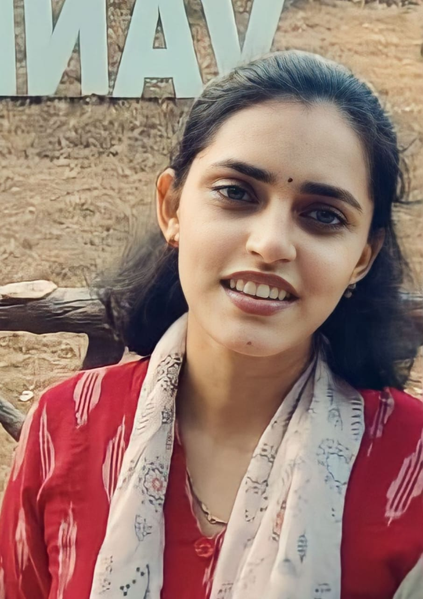

I am a postdoctoral fellow, working with Dr. Albert Sunny at IIT Palakkad Technology IHub Foundation (IPTIF), Palakkad, Kerala, India.
My research interests are in theoretical computer science, especially in graph theory. In particular, I am interested in Structural Graph Theory, Graph Colorings, Graph Algorithms, and Complexity Analysis.
I received my Ph.D. in Mathematics from Indian Institute of Information Technology Design & Manufacturing (IIITDM Chennai), Kancheepuram, India in 2017. My supervisor is Dr K Premkumar.
Department of Mathematics
Stockholms universitet
SE-106 91 Stockholm
Sweden
mailto: thekkumpadan < at > math.su.se; tp.sandhya < at > gmail.com My list of publications can also be found at DBLP and Google Scholar. In journal: Submitted:Contact
Publications
[Publisher's Page][Preprint]
[Publisher's Page] [Preprint]
[Publisher's Page]
[Publisher's Page]
[Publisher's Page] [Preprint]
[Publisher's Page] [Preprint]
[Publisher's Page] [Preprint]
[Publisher's Page] [arXiv]
[Publisher's Page]
[Publisher's Page]
[Publisher's Page]
[Publisher's Page]
[Publisher's Page]
Teaching
Semester Course Role Summer'20,'21 Algorithms for Graph Visualization (Master) Lecturer Winter '19, '20 Parameterized Algorithms (Master) Lecturer Summer'19,'20 Algorithms and Data structures (Bachelor) T A Winter '19, '20 Theoretical Computer Science (Bachelor) T A Summer '19 Efficient Algorithms (Master) T A Summer '20 Graphs and Networks Algorithms (Practical, Master) T A Winter '21 Advanced Topics in Parameterized Algorithms and Complexity (Seminar, Master) Supervisor Winter '20 Algorithms for Planar Graphs (Seminar, Bachelor) Supervisor Summer '19 Selected Topics in Graph Visualization (Seminar, Master) Supervisor
Semester Course Role Jul-Nov '17 Mathematical Methods (Master) Lecturer Jul-Nov '17 Applied Mathematics (Master) Lecturer
Semester Course Role 2011-2016 Computational Engineering (Bachelor) T A 2011-2016 Object Oriented Programming with C++ (Bachelor) T A Jul-Dec 2015 Data Structures & Algorithms Practice (Bachelor) T A
